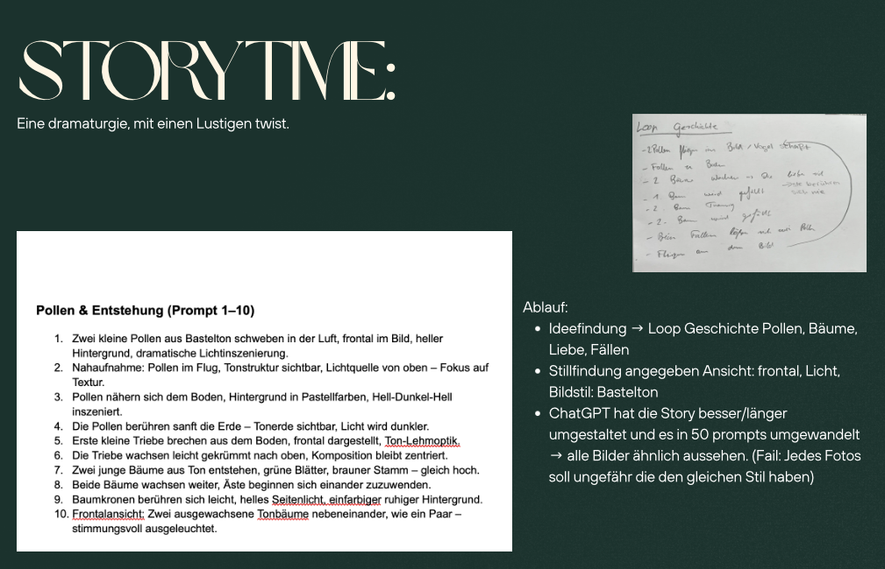

On this page you find the brainstorming on how to got our ideas and output for our graphic novel. For this project I was assigned to work in a group of three, where we used MidJourney, a website for creating AI-generated images and videos. The goal was to produce a graphic novel using AI and ensure that the pictures remained consistent, which we approached through a loop animation. The storyline was built as a small dramaturgy with a humorous twist. It follows two pollen grains falling from the sky to the earth, where they grow into trees and fall in love with each other. Shortly after, however, a lumberjack arrives and cuts one tree down. When the first tree falls, the second soon follows, and the pollen rise back into the sky again. Through this process we learned the importance of prompt engineering and writing precise instructions to achieve the desired output. We also discovered that the editing tool in MidJourney worked better for refining images than repeatedly uploading new input images. What worked especially well was the final website structure and the overall coherence of the images. It was a fun project, and I would like to continue working with this approach in the future.
 to final project github repository projects